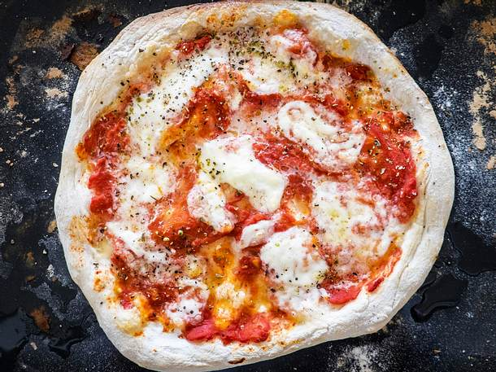

Pizza

Description
Neapolitanische Pizza.
Ingredients
- 16 g Meersalz
- 650 g + etwas Weizenmehl (Type 00/Pizzamehl)
- 1 knapperbsengroßes Stück (ca. 2 g) frische Hefe (statt der Bierhefe)
- 2 Dose(n) (à 400 g) geschälte und abgetropfte San-Marzano-Tomaten
- Salz
- getrockneter Oregano
- 250 g Mozzarella
Steps
- 30 ml Wasser (20–22 °C), Salz, 60 g Mehl und Hefe in eine Rührschüssel geben
- eig ca. 30 Minuten mit den Händen auf der Arbeitsfläche kneten.
- Teig vierteln und zu Kugeln formen.
- Ofen vorheizen (E-Herd: mind. 250 °C).
- Fladen auf ein Backblech legen.